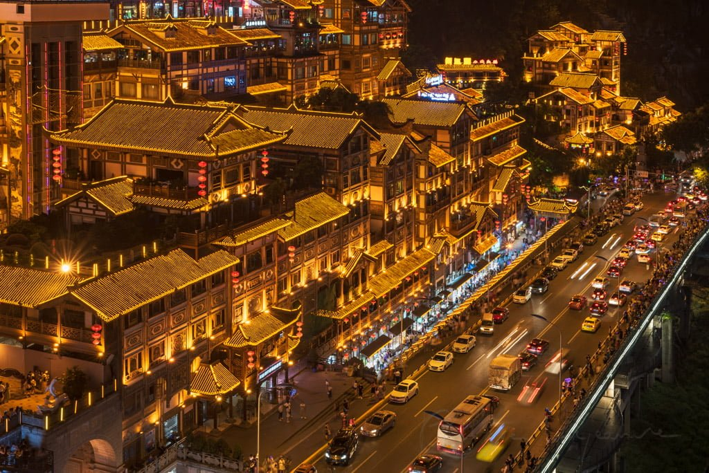
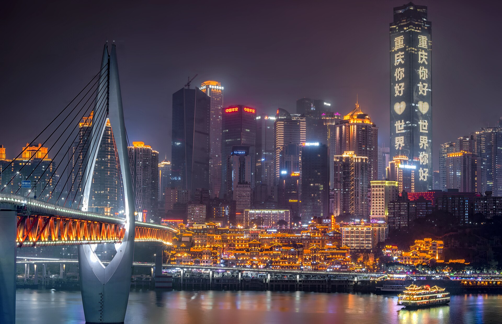
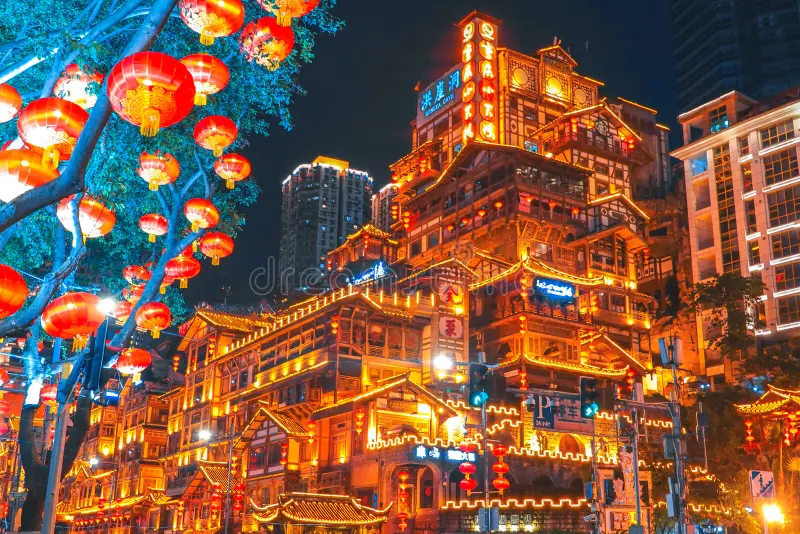
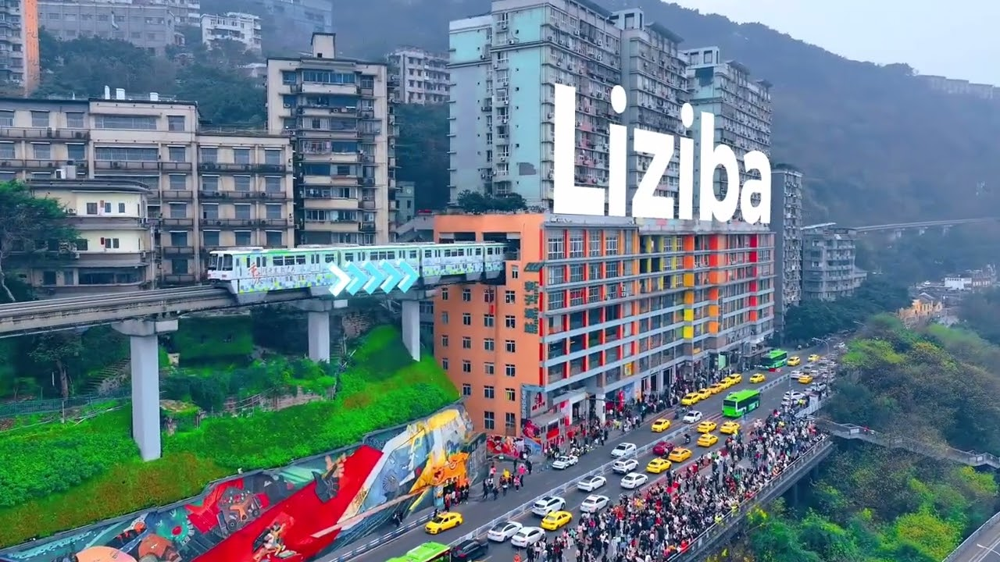
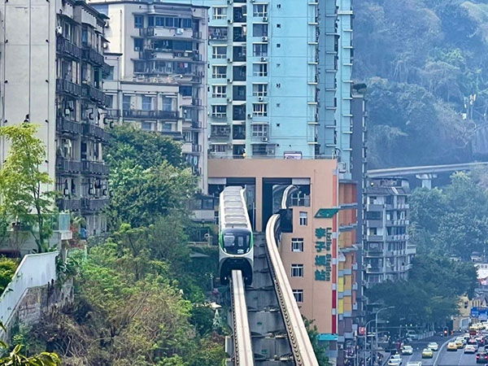
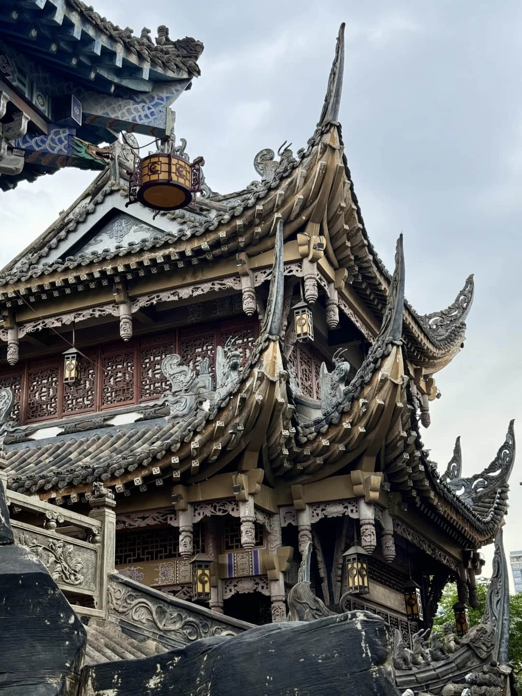
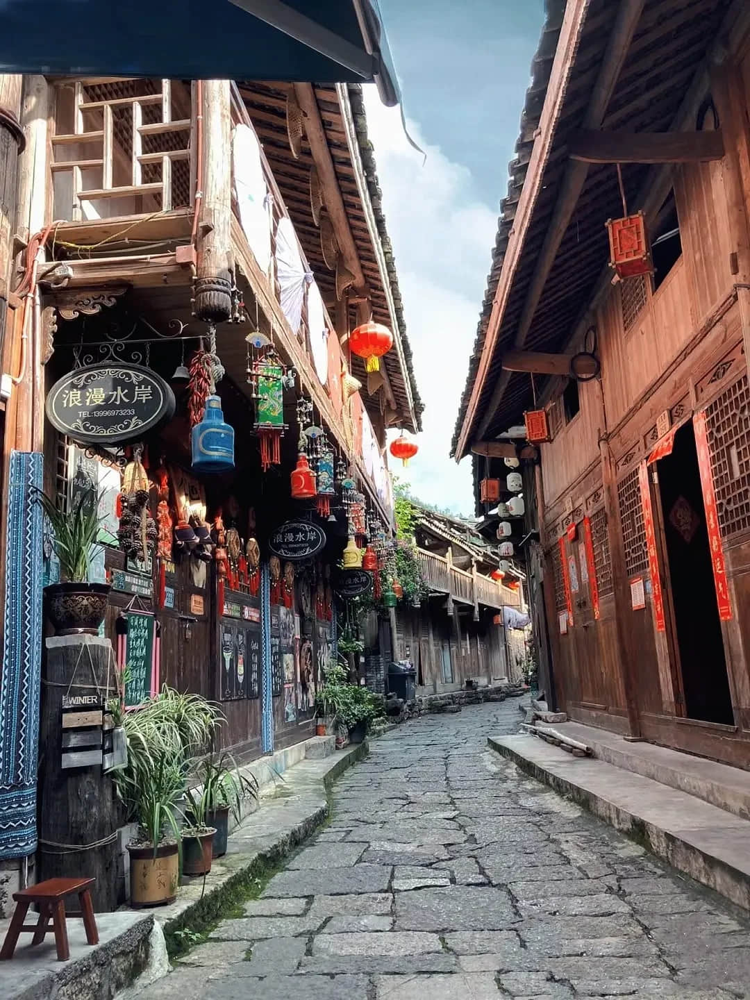

City Highlights
Chongqing is known for its mountain roads, river views, hot pot culture, and glowing nighttime skyline. These destinations show both the old and new sides of the city.
- Hongya Cave
-

Hongya Cave 1 
Hongya Cave 2 
Hongya Cave 3 Hongya Cave is one of Chongqing's most famous night-view spots. The layered buildings, lights, food streets, and river location make it a popular place for photos.
- Best known for night views
- Located near the riverside
- Great place to try local snacks
- Liziba Metro Station
-

Liziba Metro 1 
Liziba Metro 2 
Liziba Metro 3 Liziba Metro Station is famous because the train appears to pass through a building. It shows how Chongqing adapts transportation to its steep mountain landscape.
- Popular photo and video location
- Shows Chongqing's unusual city design
- Easy to visit by metro
- Ciqikou Ancient Town
-

Ciqikou 1 
Ciqikou 2 
Ciqikou 3 Ciqikou Ancient Town gives visitors a more traditional experience with narrow lanes, teahouses, street food, and local shops.
- Good for walking and shopping
- Known for snacks and tea culture
- Offers a traditional contrast to the modern city